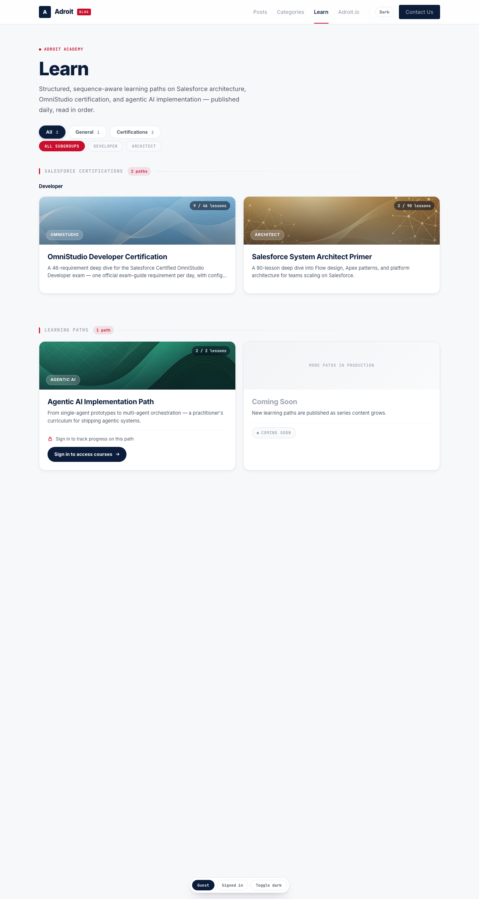
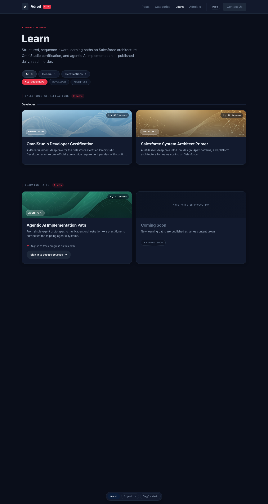
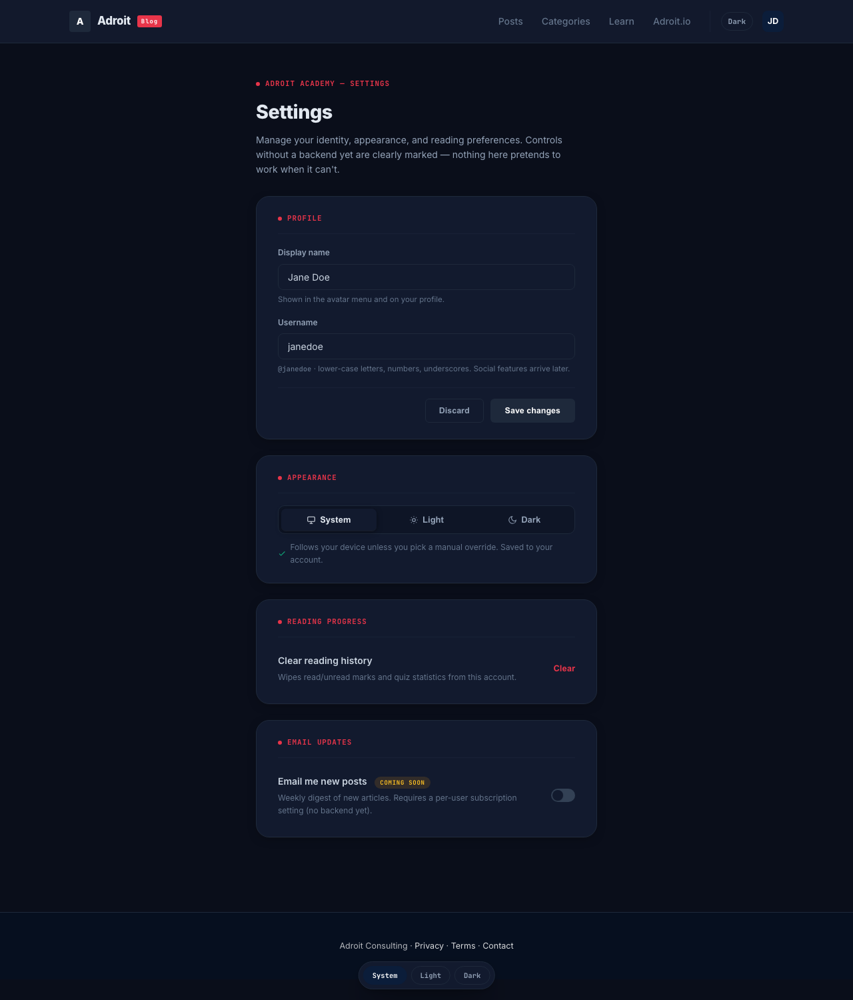
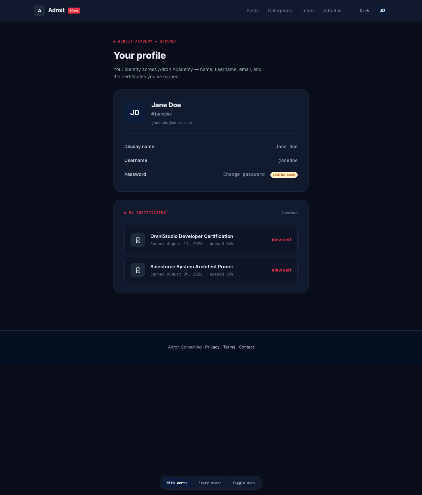

Four linked deliverables for Round 3 (WS-1 spacing audit, WS-2 dark mode, WS-3 Learn hub, WS-5 profile/account). Built on the shipped Adroit design language (navy #0B1D3A / red #C8102E, Inter + mono, elevation tokens) — this round is additive, not a redesign.
Full findings in spacing-audit-round3.md. Grounded in actual src/ files read this session. Scored by blast radius × severity; fixes are token-driven, not one-off patches.
| ID | Finding | Location | Sev | Fix token |
|---|---|---|---|---|
| H1 | Progress-row vertical rhythm mismatch (flagged seed): blog pt-5/24px gutter vs learn-card mt-3 px-1 | BlogReadProgress.tsx · learn/page.tsx:87 | High | --space-progress-block / --space-progress-inset |
| H2 | Hero top padding varies 36–56px across /blog, /learn, /tags, series, lesson | blog/page.tsx, learn/page.tsx, tags/* | High | --space-hero-block / --space-hero-block-tight |
| H3 | Section closure bottom padding drifts (learn pb-24 vs blog pb-10) | learn/page.tsx:69, blog/page.tsx:227 | High | --space-section-bottom |
| H4 | Card body gutter vs progress-row inset disagree (p-[22px] vs px-1) | PathCard.tsx:43, learn/page.tsx:87 | High | --space-card-pad / --space-row-sm |
| M1–M7 | Section-header margins, button heights (py-2 vs h-11), card grids vs card pad, bar heights | multiple | Med | heading/button/card-pad tokens |
| L1–L9 | px-1 drift, mt-3 drift, -translate-y values, radius-panel 20px | ExamLocked, CertReadiness, SeriesSyllabus | Low | --elev-lift, --radius-panel |
Spacing scale (4px base): --space-1..8,10,14,24 → semantic aliases --space-gutter-page (24px), --space-card-pad (22px), --space-row-sm/md (12/16px), --space-heading-after (20px), --space-hero-block (56px), --space-progress-block/inset.
Full-site theme via a semantic token layer + dark class on <html>. Components stop referencing raw navy/gray-* and reference semantic tokens; html.dark remaps the same tokens to a Fortress-dark palette. Applies to blog posts + MDX lessons via scoped overrides. Auto (OS) + manual override persisted to user_profiles.theme_pref.
Deep navy-black page — Fortress dark, not harsh black.
Card surface lifts off the page by hue, not shadow.
Slate border, subtle on dark.
Light body text; headings #F1F5F9.
Brighter red — passes AA on dark surfaces.
Brighter emerald for read/complete on dark.
FOUC guard: inline script in <head> (or suppressHydrationWarning) reads localStorage['adroit-theme'] + prefers-color-scheme and adds/removes dark before hydration. Controls: Settings Appearance card + avatar-menu quick toggle. a11y: lara's audit must re-run in both themes.
Top-level filter chips (All / General / Certifications), subgroup section headers, guest-gated cards with sign-in CTA, per-series progress on the card body, and a Continue Learning section for signed-in users.

Sign in to access courses CTA (GuestCTA copy pattern). Continue Learning hidden.
| Element | Guest | Signed-in |
|---|---|---|
| PathCard | Non-clickable <div>; name + desc visible; lock + CTA | Clickable <Link> to syllabus |
| Progress row | Content metric only (Lesson N of M) | Content metric + user progress bar on card body (emerald) + quiz avg |
| Filter chips | All / General / Certifications; subgroup chips reveal under a selected top group | |
| Continue Learning | Hidden | Shown above filters; resume link to next uncompleted lesson |
| Subgroup headers | Salesforce Certifications → Developer / Architect sub-grouped | |
Settings gets a real Profile card (display name + username → PATCH) and an Appearance card (theme segmented control). Profile gets name fields + a My Certificates section. Avatar menu shows display name (fallback email).


Scored before delivery on the 10-tell diagnostic.
| Tell | Verdict |
|---|---|
| Tech gradient / generic hue | 0 — existing navy/red kept; no indigo |
| Feature-tile grid | 0 — Learn hub is an Explore grid with one dominant signal (progress) |
| Accent rail / unearned blur | 0 — no left strips; blur only on banner chips + sticky header |
| Monument stat / icon topper | 0 — progress is a thin bar + mono counter, not an oversized number |
| Center stack | 0 — asymmetric editorial layout retained |
| Default type | 0 — Inter + mono chosen, kept |
| Wrong surface | 0 — Explore/Configure/Command-Inspect committed before tokens |
Score: 0/10. Wow levers hit: live continue-learning card, filter/subgroup interaction, guest vs signed-in states, full dark theme, cert seal cards.
globals.css @theme inline; apply per spacing-audit-round3.md maphtml.dark remap + FOUC script + ThemeProvider/useTheme; segmented System/Light/Dark in Settings + avatar-menu quick toggle; PATCH themePrefContract: components reference semantic tokens, never raw --color-navy/gray-*. All gated routes/APIs use server-side HttpOnly-cookie session checks. Guest gating is UI-level (syllabus stays crawlable). Do NOT touch src/lib/sort.ts, content/, or build scripts.
All mockups verified headless (Chromium 148) at 1280px — light + dark, no console errors. Screenshots under design/round3/screenshots/.
{kind=link}
{kind=link}
{kind=link}
{kind=link}